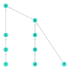
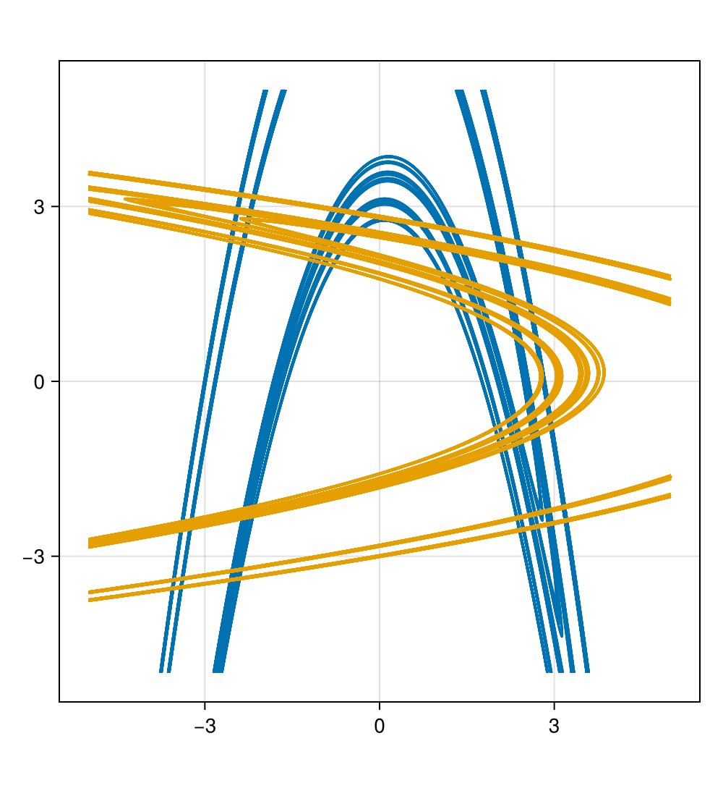
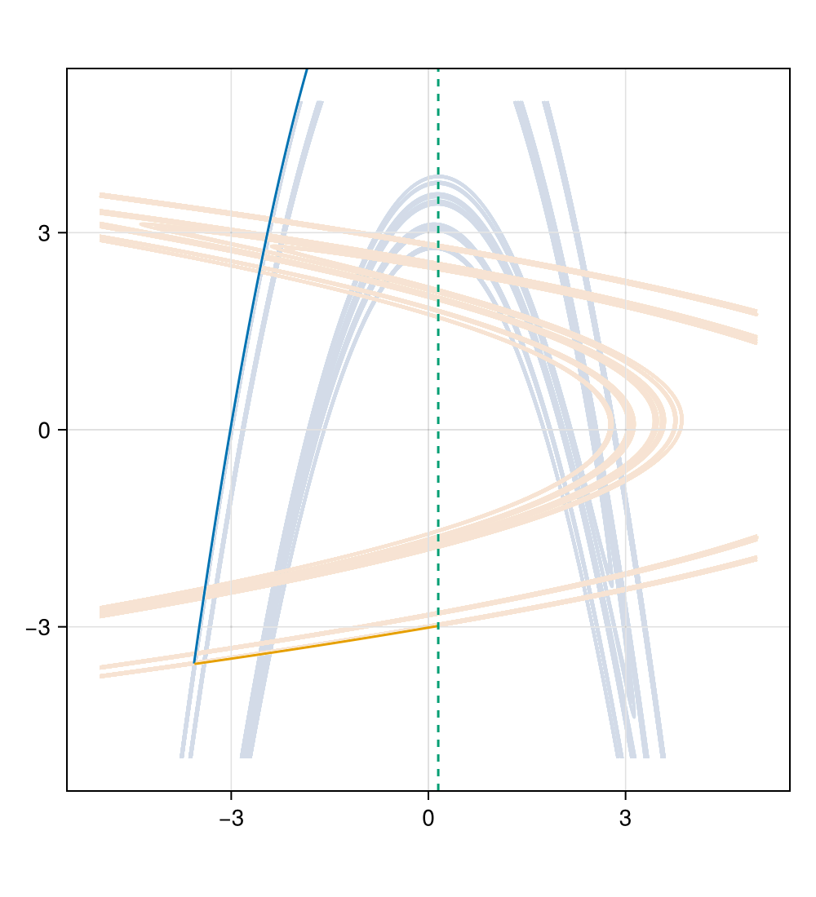
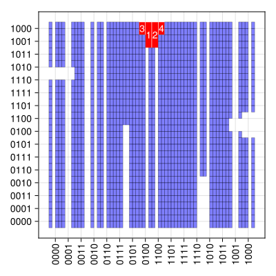

ガイド
公開しているプログラムについて、簡単な説明と使用方法を記載します。
BlockMaps.jl
BlockMaps.jl では subshift of finite type の shift map と可換な連続写像 (Block map / Sliding block code) を扱う BlockMap が定義されています. また BlockMap 同士の合成や付随する StrongShiftEquivalence を返す関数なども使用することができます.
Block Map
Subshift of finite type の間のシフト可換な連続写像は有限長の語 (block) とそれの変換先の記号によって表現できることが知られています. そこで BlockMap は各ブロックとその変換先の記号の組による Dict によって表現されます.
julia> using .BlockMapsjulia> shift_flip = BlockMap( [2;;], [2;;], Dict( (1, 1) => 2, (1, 2) => 1, (2, 1) => 2, (2, 2) => 1, ), 0 )2-BlockMap: SFT([2;;]) → SFT([2;;]) with memory=0: (1, 1) => 2 (1, 2) => 1 (2, 1) => 2 (2, 2) => 1
BlockMap の最初の2つの引数は block map のドメインとコドメインを表しており, Matrix{Int} 型の正方行列によって指定します. 例えば, 上で定義した shift_flip は full two-shift の間の block map $X_{[2]} \to X_{[2]}$ です.
3番目の引数によって block map の具体的な写像規則を指定します. 写像規則は Dict{NTuple{N, Int}, Int} 型で表現されます. ここで N は 1 以上の整数です. shift_flip の場合, 入力列 $x \in X_{[2]}$ の長さ 2 のブロック $(x_i, x_{i+1})$ が (1, 1) の場合は $y = \mathrm{shift\_flip}(x)$ の $i$ 番目の記号 $y_i$ は鍵 (1, 1) の値である $2$ になります. 同様に $(1, 2)$ の場合は $1$ に, $(2, 1)$ の場合は $2$ になります.
最後の引数は BlockMap の memory field を指定するものです. この値は Int 型の数値によって与えられ, BlockMap が現在見ているブロックの位置と出力先の記号の位置をどれほどずらすかを指定します. 例えば, 一般的な block map $\varphi: X_A \to X_B$ と写像 $\varphi$ による $x \in X_A$ の移り先 $y = \varphi(x)$ を考えます. $\varphi$ を表現する BlockMap の定義ブロック (写像規則をしてする辞書型の鍵) の長さを $N$, memory field の値を $m$ とすると $i$ 番目の $y$ の値 $y_i$ は
\[y_i = \varphi[x_{i-m}, x_{i+1-m}, \dots, x_{i+N-m}]\]
という風にして定まります.
入力を簡便にするために BlockMap の写像規則には Dict{String, Int} と Dict{String, Char} を用いることもできます. また, ドメインとコドメインが同じ場合は省略することが可能です.
julia> BlockMap([2;;], Dict("1" => 2, "2" => 1), -1)1-BlockMap: SFT([2;;]) → SFT([2;;]) with memory=-1: (1,) => 2 (2,) => 1
組み込みの BlockMap コンストラクタ
一部の特殊な BlockMap にはコンストラクタを実装しています.
基本的に引数として domain・codomain の subshift of finite type を表す行列を取ります. 行列の全ての成分が $0$ または $1$ の場合は vertex shift, それ以外では edge shift として domain・codomain の subshift of finite type を扱います.
Identity Map
BlockMaps.identity は恒等写像のコンストラクタです. Domain・codomain が一致するため受け取る引数は一つのみです.
julia> BlockMaps.identity([1 1; 1 0])1-BlockMap: SFT([1 1; 1 0]) → SFT([1 1; 1 0]) with memory=0: (1,) => 1 (2,) => 2julia> BlockMaps.identity([2;;])1-BlockMap: SFT([2;;]) → SFT([2;;]) with memory=0: (1,) => 1 (2,) => 2julia> BlockMaps.identity([2 1; 1 2])1-BlockMap: SFT([2 1; 1 2]) → SFT([2 1; 1 2]) with memory=0: (1,) => 1 (2,) => 2 (3,) => 3 (4,) => 4 (5,) => 5 (6,) => 6
Shift Map
shift は指定した subshift of finite type 上の shift map のコンストラクタです. Domain・codomain が一致するため受け取る引数は一つのみです.
julia> shift([1 1; 1 0])1-BlockMap: SFT([1 1; 1 0]) → SFT([1 1; 1 0]) with memory=-1: (1,) => 1 (2,) => 2julia> shift([2;;])1-BlockMap: SFT([2;;]) → SFT([2;;]) with memory=-1: (1,) => 1 (2,) => 2julia> shift([2 1; 1 2])1-BlockMap: SFT([2 1; 1 2]) → SFT([2 1; 1 2]) with memory=-1: (1,) => 1 (2,) => 2 (3,) => 3 (4,) => 4 (5,) => 5 (6,) => 6
Compound Marker Endomorphism
marker_endomorphism は full tow-shift $X_{[2]}$ 上の compound marker endomorphism のコンストラクタです. 1, 2 と * からなる複数列を marker として受け取ります. Marker を指定するための引数の型には Tuple{Vararg{String}} や Vector{String} が使用できます.
julia> marker_endomorphism(("1 * 2 2", "1 * 1")) # スペースで記号同士を分ける4-BlockMap: SFT([2;;]) → SFT([2;;]) with memory=1: (1, 1, 1, 1) => 2 (1, 1, 1, 2) => 2 (1, 1, 2, 1) => 1 (1, 1, 2, 2) => 2 (1, 2, 1, 1) => 1 (1, 2, 1, 2) => 1 ⋮ (2, 1, 2, 1) => 1 (2, 1, 2, 2) => 1 (2, 2, 1, 1) => 2 (2, 2, 1, 2) => 2 (2, 2, 2, 1) => 2 (2, 2, 2, 2) => 2julia> marker_endomorphism("1 * 2 2", "1 * 1")4-BlockMap: SFT([2;;]) → SFT([2;;]) with memory=1: (1, 1, 1, 1) => 2 (1, 1, 1, 2) => 2 (1, 1, 2, 1) => 1 (1, 1, 2, 2) => 2 (1, 2, 1, 1) => 1 (1, 2, 1, 2) => 1 ⋮ (2, 1, 2, 1) => 1 (2, 1, 2, 2) => 1 (2, 2, 1, 1) => 2 (2, 2, 1, 2) => 2 (2, 2, 2, 1) => 2 (2, 2, 2, 2) => 2
Operations
BlockMap に対していくつかの操作が実装されています.
Evaluate
BlockMap に記号列を入力することができます. 入力列の型には Vector{Int} や Int... などが使用できます.
julia> shift_flip((1, 2, 2, 1, 2, 1))(1, 1, 2, 1, 2)julia> shift_flip([1, 2, 2, 1, 2, 1])(1, 1, 2, 1, 2)julia> shift_flip(1, 2, 2, 1, 2, 1)(1, 1, 2, 1, 2)
Dict{Int, Int} を使用することで memory による index のズレも考慮します.
julia> sq = zip(1:6, [1, 2, 2, 1, 2, 1]) |> DictDict{Int64, Int64} with 6 entries: 5 => 2 4 => 1 6 => 1 2 => 2 3 => 2 1 => 1julia> osq = shift([2;;])(sq)Dict{Int64, Int64} with 6 entries: 0 => 1 4 => 2 5 => 1 2 => 2 3 => 1 1 => 2julia> sort(collect(osq), by=first)6-element Vector{Pair{Int64, Int64}}: 0 => 1 1 => 2 2 => 2 3 => 1 4 => 2 5 => 1
Composition
2 つの BlockMap を合成することができます.
julia> flip = marker_endomorphism("*")1-BlockMap: SFT([2;;]) → SFT([2;;]) with memory=0: (1,) => 2 (2,) => 1julia> flip(shift_flip)1-BlockMap: SFT([2;;]) → SFT([2;;]) with memory=-1: (1,) => 1 (2,) => 2
Inverse
inv を用いることで与えられた BlockMap の逆写像を求めることができます. アルゴリズムの都合により逆写像が存在していても見つけられない場合があります. 逆写像を見つけることができなかった場合はエラーになります.
julia> inv(BlockMaps.identity([1 1; 1 0]))1-BlockMap: SFT([1 1; 1 0]) → SFT([1 1; 1 0]) with memory=0: (1,) => 1 (2,) => 2julia> inv(shift_flip)1-BlockMap: SFT([2;;]) → SFT([2;;]) with memory=1: (1,) => 2 (2,) => 1
Extend and Shorten
extend は与えられた BlockMap の blocks field の domain 側のブロックを前後に延長した BlockMap を返します.
julia> extended_shift = extend(shift([1 1; 1 0]), 2, 1) # 第二引数が左に延長する長さ, 第三引数が右に延長する長さ4-BlockMap: SFT([1 1; 1 0]) → SFT([1 1; 1 0]) with memory=1: (1, 1, 1, 1) => 1 (1, 1, 1, 2) => 1 (1, 1, 2, 1) => 2 (1, 2, 1, 1) => 1 (1, 2, 1, 2) => 1 (2, 1, 1, 1) => 1 (2, 1, 1, 2) => 1 (2, 1, 2, 1) => 2
shorten は extend の逆で与えられた BlockMap の blocks field の domain ブロックを縮めます. BlockMap のみを与えた場合は縮められるだけ縮めます. 第二, 第三引数を用いることで extend と同様に縮める長さを指定できます.
julia> shorten(extended_shift) # 縮められるだけ縮める1-BlockMap: SFT([1 1; 1 0]) → SFT([1 1; 1 0]) with memory=-1: (1,) => 1 (2,) => 2julia> shorten(extended_shift, 1, 1) # 第二引数が左に縮める長さ, 第三引数が右に縮める長さ2-BlockMap: SFT([1 1; 1 0]) → SFT([1 1; 1 0]) with memory=0: (1, 1) => 1 (1, 2) => 2 (2, 1) => 1
元の BlockMap と互換性がなくなるほど縮める場合は warn を出力します.
julia> shorten(extended_shift, 0, 2)┌ Warning: post is exceed the maximum shortenable length └ @ Main.BlockMaps C:\Users\main\Desktop\数学\master-thesis-appendix\src\BlockMaps.jl:1863 ERROR: ArgumentError: block map must not output invalid sequence in the target shift space
BlockMap に対する inv や合成は shorten されたものを返します.
Shift Equivalence
BlockMaps には Elementary Strong Shift Equivalence (ESSE) を扱うための構造体 ElementaryStrongShiftEquivalence と Strong Shift Equivalence (SSE) を扱うための構造体 StrongShiftEquivalence が定義されています.
Elementary Strong Shift Equivalence
ElementaryStrongShiftEquivalence は二つの行列からなる構造体です. Alias として ESSE が使用できます.
julia> esse = ESSE([1 1] => [1; 1;;])ElementaryStrongShiftEquivalence: ⎡1⎤ [1 1] ⎣1⎦ ⎡1 1⎤ [2]───────────▶︎⎣1 1⎦julia> esse.first * esse.second1×1 Matrix{Int64}: 2julia> esse.second * esse.first2×2 Matrix{Int64}: 1 1 1 1
ESSE は mutable な Pair{Matrix, Matrix} として扱うことができ iterate や length, reverse! などを使用できます.
julia> length(esse)2julia> first(esse)1×2 Matrix{Int64}: 1 1julia> last(esse)2×1 Matrix{Int64}: 1 1julia> esse[2]2×1 Matrix{Int64}: 1 1julia> reverse!(esse)ElementaryStrongShiftEquivalence: ⎡1⎤ ⎡1 1⎤ ⎣1⎦ [1 1] ⎣1 1⎦───────────▶︎[2]
Strong Shift Equivalence
StrongShiftEquivalence は ElementaryStrongShiftEquivalence の有限列として定義されている構造体です. $R_i \Rightarrow S_i, 1 \le i \le l$ を ESSE として, それらから Strong Shift Equivalence を定義する場合
\[S_i R_i = R_{i+1} S_{i+1},\hspace{1em} 1 \le i \le l-1\]
を満たしている必要があります. 上の条件を満たしていない場合はエラーとなります. Alias として SSE が使用できます.
julia> esse2 = ESSE([1 0; 0 1], [1 1; 1 1])ElementaryStrongShiftEquivalence: ⎡1 0⎤ ⎡1 1⎤ ⎡1 1⎤ ⎣0 1⎦ ⎣1 1⎦ ⎡1 1⎤ ⎣1 1⎦─────────────▶︎⎣1 1⎦julia> sse = SSE(esse2, esse)StrongShiftEquivalence with lag 2: ⎡1 0⎤ ⎡1 1⎤ ⎡1⎤ ⎡1 1⎤ ⎣0 1⎦ ⎣1 1⎦ ⎡1 1⎤ ⎣1⎦ [1 1] ⎣1 1⎦─────────────▶︎⎣1 1⎦───────────▶︎[2]
SSE は Vector{ESSE} として扱うことができ, push!, append!, pop!, reverse! などを使用できます.
julia> reverse!(sse)StrongShiftEquivalence with lag 2: ⎡1⎤ ⎡1 1⎤ ⎡1 0⎤ [1 1] ⎣1⎦ ⎡1 1⎤ ⎣1 1⎦ ⎣0 1⎦ ⎡1 1⎤ [2]───────────▶︎⎣1 1⎦─────────────▶︎⎣1 1⎦
また固有のメソッドとして, reduce! があります. reduce! は与えられた SSE から単位行列を含む自明な ESSE を除去します. 最初に現れる, または最後に現れる自明な ESSE を除去したい場合はそれぞれ reducefirst!, reducelast! を使用してください.
julia> reduce!(sse)1-element Vector{Main.BlockMaps.ElementaryStrongShiftEquivalence}: ElementaryStrongShiftEquivalence([1 1; 1 1] => [1 0; 0 1])
Decomposition of Block Map
StrongShiftEquivalence(::BlockMap) は与えられた BlockMap を state splitting, state amalgamation または permutation matrix による ESSE からなる SSE を計算する関数です. 返り値には SSE のほか, Dimension Group Representation を計算するときに必要な逆行列を掛ける回数をもちます.
julia> decomp = SSE(shift_flip)(StrongShiftEquivalence([1 1] => [1; 1;;], [1 0 1 0; 0 1 0 1] => [1 0; 1 0; 0 1; 0 1], [1 0; 1 0; 0 1; 0 1] => [1 0 1 0; 0 1 0 1], [0 1; 1 0] => [1 1; 1 1], [1; 1;;] => [1 1]), 1)julia> decomp[1]StrongShiftEquivalence with lag 5: ⎡1 0⎤ ⎡1 0⎤ ⎢1 0⎥ ⎡1 0 1 0⎤ ⎢1 0⎥ ⎡1⎤ ⎡1 0 1 0⎤ ⎢0 1⎥ ⎢1 0 1 0⎥ ⎢0 1⎥ ⎡1 0 1 0⎤ [1 1] ⎣1⎦ ⎡1 1⎤ ⎣0 1 0 1⎦ ⎣0 1⎦ ⎢0 1 0 1⎥ ⎣0 1⎦ ⎣0 1 0 1⎦ ⎡1 1⎤ [2]───────────▶︎⎣1 1⎦─────────────────▶︎⎣0 1 0 1⎦─────────────────▶︎⎣1 1⎦─⋯ ⎡0 1⎤ ⎡1 1⎤ ⎡1⎤ ⎣1 0⎦ ⎣1 1⎦ ⎡1 1⎤ ⎣1⎦ [1 1] ⋯──────────────▶︎⎣1 1⎦───────────▶︎[2]julia> decomp[2]1
Dimension Group Representation
dimension_representation は与えられた SSE の dimension group representation を計算する関数です. 第二引数では dimension group representation の codomain に関連する行列の擬似逆行列を掛ける回数を指定できます. 省略した場合は 0 になります.
julia> dimension_representation(decomp)1×1 Matrix{Float64}: 2.0julia> dimension_representation(decomp[1])1×1 Matrix{Int64}: 4julia> dimension_representation(decomp[1], 0)1×1 Matrix{Int64}: 4
関連する関数に orbitsign_number, gyration_number, sign_gyration_compatibility_condition があります. それぞれ与えられた BlockMap の orbit sign number, gyration number, sign gyration compatibility condition を計算します. それぞれ第二引数で計算に使用する軌道の周期を指定します. それぞれの alias として os, gy, sgcc が使用できます.
orbitsign_number は $\pm 1$, os は $\{0, 1\}$, gyration_number(⋅, n) と gy(⋅, n), sign_gyration_compatibility_condition(⋅, n), sgcc(⋅, n) は $\{0, 1, …, n-1\}$ の範囲で値をとります.
julia> orbitsign_number(shift_flip, 4)-1julia> os(shift_flip, 4)1julia> gy(shift_flip, 4)1julia> sgcc(shift_flip, 4)3
cascade-count.jl
フルシフト $\Sigma_2 = \{1, 2\}^\mathbb{Z}$ の与えられた subshifts of finite type $X$ に対して、$\Sigma_2 \setminus X$ における $(2, n)$-cascade の数を計算するためのプログラムです。 Subshift of finite type は 1, 2 と "*" をアルファベットとする有限個の forbidden words の配列で表されます。 ここで "*" は 1 と 2 のどちらかを表すワイルドカードで、例えば (1, 2, "*", 1) は (1, 2, 1, 1) と (1, 2, 2, 1) の両方を表します。
cascade-count.jl には $2$-cascade の数を計算するための関数が3つ定義されています。
count_cascade は、与えられた subshift of finite type $X$ に対して、$\Sigma_2 \setminus X$ における $(2, n)$-cascade の数 $c_n$ を次の漸化式を用いて計算します。
\[ c_n = \frac{1}{2} \left(p_n - \sum_{\substack{n = 2^i\dot k, \\ i \ge 1}} c_k \right).\]
ここで、$p_n$ は $\Sigma_2 \setminus X$ における周期 $n$ の周期軌道の数を表しています。
gcd2_cascade は、与えられた subshift of finite type $X$ に対して、$\Sigma_2 \setminus X$ における $(2, n)$-cascade の数 $c_n$ を $\gcd$ を用いた以下の式で計算します。
\[ c_n = \frac{1}{2n} \sum_{d | n} \gcd(2, d) \mu\left(d\right) f_{n/d}.\]
ここで、$\mu$ は Möbius 関数、$f_{n/d}$ は $\Sigma_2 \setminus X$ における $\sigma^{n/d}$ の不動点の数を表しています。
even1_cascade は、与えられた subshift of finite type $X$ に対して、$\Sigma_2 \setminus X$ における $(2, n)$-cascade の数 $c_n$ を、周期 $n$ の周期軌道のうち 1 の数が偶数であるものの数を用いて計算します。
修士論文の内容から、これら3つの関数は全て同じ結果を返すことが分かります。
julia> count_cascade([(2, 1, "*", 2, 1)], 12)' # `'` is just for transpose1×12 adjoint(::Vector{Int64}) with eltype Int64: 0 0 1 0 1 0 4 6 13 22 48 89julia> gcd2_cascade([(2, 1, "*", 2, 1)], 12)' # `'` is just for transpose1×12 adjoint(::Vector{Int64}) with eltype Int64: 0 0 1 0 1 0 4 6 13 22 48 89julia> even1_cascade([(2, 1, "*", 2, 1)], 12)' # `'` is just for transpose1×12 adjoint(::Vector{Int64}) with eltype Int64: 0 0 1 0 1 0 4 6 13 22 48 89
3つの関数は forbidden words を表す配列のほかに整数値 m を引数に取ります。 この m を元に、関数は m 以下の $n$ に対する $(2, n)$-cascade の数を計算して、ベクトルとして返します。 例えば、上の実行例では、$\Sigma_2 \setminus X$ における $(2, n)$-cascade の数を、$n = 1, 2, ..., 12$ に対して計算しています。
$X$ の subshift of finite type $Y$ に対して、$X \setminus Y$ における $(2, n)$-cascade の数を計算するためには、$Y$ に対する計算結果から $X$ に対する計算結果を引けば良いです。
julia> X = [(2, 1, "*", 2, 1, 1)]1-element Vector{Tuple{Int64, Int64, String, Int64, Int64, Int64}}: (2, 1, "*", 2, 1, 1)julia> Y = [(2, 1, "*", 2, 1)]1-element Vector{Tuple{Int64, Int64, String, Int64, Int64}}: (2, 1, "*", 2, 1)julia> count_cascade(Y, 12)' - count_cascade(X, 12)' # `'` is just for transpose1×12 adjoint(::Vector{Int64}) with eltype Int64: 0 0 1 0 1 0 2 2 6 8 20 34
subshift-lattice.jl
フルシフト $\Sigma_2 = \{0, 1\}^\mathbb{Z}$ の与えられた subshifts of finite type の間の包含関係を計算するためのプログラムです。 このプログラムは、subshift of finite type を構成する forbidden words の集合を入力として受け取り、subshift of finite type の間の包含関係を計算します。 Subshift of finite type は、0 と 1 をアルファベットとする有限個の forbidden words の配列で表されます。
julia> [ [1, 0, 1, 0, 0], [1, 1, 1, 0, 0] ] ⊏ [ [0, 1, 0, 1, 0, 0], [0, 1, 1, 1, 0, 0] ]truejulia> [ [1, 0, 1, 0, 0], [1, 1, 1, 0, 0] ] ⊐ [ [0, 1, 0, 1, 0, 0], [0, 1, 1, 1, 0, 0] ]false
また、shift_hasse_diagram 関数を使うことで、与えられた subshifts of finite type の集合に対して、包含関係を表す Hasse diagram を描画することができます。
shift_hasse_diagram([
[ [1, 0, 1, 0, 0], [1, 1, 1, 0, 0] ],
[ [0, 1, 0, 1, 0, 0], [0, 1, 1, 1, 0, 0] ],
[ [0, 0, 1, 0, 1, 0, 0], [0, 0, 1, 1, 1, 0, 0] ],
[
[0, 0, 1, 0], [0, 1, 1, 0],
[1, 0, 0, 1, 1, 1], [1, 0, 1, 1, 1, 1],
],
[
[0, 0, 1, 0], [0, 1, 1, 0],
[1, 1, 0, 0, 1, 1, 1, 0], [1, 1, 0, 1, 1, 1, 1, 0],
],
[ [0, 0, 1, 0], [0, 1, 1, 0] ],
[
[1, 0, 0, 1, 0], [1, 0, 1, 1, 0],
[0, 0, 0, 0, 1, 0], [0, 0, 0, 1, 1, 0],
[1, 0, 0, 1, 1, 1], [1, 0, 1, 1, 1, 1],
],
[ [1, 0, 0, 1, 0], [1, 0, 1, 1, 0] ],
Word[] #full shift (`Word` is an alias for `Vector{Int}`)
])
数字は、与えられた subshifts of finite type の集合におけるインデックスを表しています。 例えば上の実行例において、フルシフトのインデックスは 9 であり、1 から 8 までの全ての頂点が 9 へのパスを持っています。 よって、フルシフトは全ての subshift of finite type を包含していることがわかります。
Pruning.jl
Hagiwara と Shudo [HS] によって提案された、保存系の実 Hénon 写像の primary pruned region を推定するアルゴリズムを Julia で実装したものです。 実 Hénon 写像の横断的なホモクリニック点を計算し、それらをフルシフト $\Sigma_2$ の点に対応させることで、pruned words を推定します。 このアルゴリズムを使うことで、与えられた実 Hénon 写像に対応する subshift of finite type を推定することができます。 Primary pruned region の完全な決定には全ての横断的なホモクリニック点を計算する必要があるため、得られる結果はあくまで推定であることに注意してください。
Pruning.jl では以下のワークフローでアルゴリズムを実行します。
1. 実 Hénon 写像の指定
Pruning.jl では、実 Hénon 写像を以下の形式で指定します。
julia> include("../src/Pruning.jl")
markerize
julia> hm = HenonMap(5.59, -1)
HenonMap(5.59, -1.0)HenonMap(a, b) は2つのパラメータを取る構造体で、以下の写像 $H_{a, b}: \mathbb{R}^2 \to \mathbb{R}^2$ を定義します。
\[H_{a, b}(x, y) = (-x^2 + b y + a,\ x).\]
2. ホモクリニック点の計算
実 Hénon 写像の横断的なホモクリニック点を計算するために、不動点の安定多様体と不安定多様体を数値的に計算します。
まず、hyperbolic_fixed_points 関数を使って双曲的な不動点を計算します。
julia> hyperbolic_fixed_points(hm)
2-element Vector{Any}:
[1.567099530598687, 1.567099530598687]
[-3.567099530598687, -3.567099530598687]
julia> fixpt = hyperbolic_fixed_points(hm)[2]
2-element Point{2, Float64} with indices SOneTo(2):
-3.567099530598687
-3.567099530598687次に、manifolds 関数を使って、不動点の安定多様体と不安定多様体を計算します。 manifolds 関数は、与えられた実 Hénon 写像と双曲的な不動点から、それらの安定多様体と不安定多様体のペアを返します。 num_iterations 引数を指定することで、多様体の計算に使用するイテレーションの回数を指定することができます。 イテレーション回数が多いほど、多様体のセグメントの数が増え、より詳細な多様体の形状を得ることができますが、今後の処理も含めて計算時間も長くなります。
julia> smfds, umfds = manifolds(hm, fixed_pt=fixpt, num_iterations=13);安定多様体を愚直に計算した場合、座標の値が非常に大きくなってしまうため、通常は $[-5, 5] \times [-5, 5]$ の範囲に収まるように、その範囲を出た部分を取り除きながら計算します。 そのため、戻り値として得られるものは、多様体の セグメントの配列 になります。 したがって、smfds と umfds を適切プロットすると、以下のように $[-5, 5] \times [-5, 5]$ の範囲で切り取られた曲線のあつまりが描画されます[plot_manifolds]。

その後、安定多様体と不安定多様体の交点を計算することで、横断的なホモクリニック点を得ることができます。 曲線の交点の計算には intersections 関数を使用します。
julia> homoclinic_pts = intersections(smfds, umfds);intersections は戻り値として Tuple{Int, Int, Int, Int, Point2} の配列を返します。
- 最初の整数は、交点が一つ目の引数の何番目のセグメント上にあるかを表します
- 二番目の整数は、交点がセグメント上の何番目の点と点の間にあるかを表します
- 三番目の整数は、交点が二つ目の引数の何番目のセグメント上にあるかを表します
- 四番目の整数は、交点がセグメント上の何番目の点と点の間にあるかを表します
- 最後の
Point2は、交点の座標を表します
Pruning.jl では、座標は GeometryBasics.jl の Point2 構造体で表現されます。
julia> homoclinic_pts[1]
(1, 1, 39, 12891, [-3.5670276274859902, -3.5665968536124044])
julia> homoclinic_pts[1][5]
2-element Point{2, Float64} with indices SOneTo(2):
-3.5670276274859902
-3.5665968536124044以降のステップでは、Point2 の座標のみを使用するため、homoclinic_pts の各要素の最後の Point2 を取り出して、横断的なホモクリニック点の座標の配列を作成します。
julia> homoclinic_pts_coords = [info[5] for info in homoclinic_pts];3. ホモクリニック点の符号化
2. ホモクリニック点の計算 で得られた横断的なホモクリニック点を、$\Sigma_2$ の点に対応させ符号化します。 ホモクリニック点を符号化するために、関数 partition を定義します。
julia> partition(pt::Point2o) = pt[1] < 0.15 ? 0 : 1
partition (generic function with 1 method)partition 関数は、Point2o 型の点を引数にとり、0 または 1 を返す関数である必要があります。 また、partition 関数の不動点における値は 0 でなければなりません。 今回は、点の x 座標が 0.15 より小さい場合は 0 を返し、そうでない場合は 1 を返すように定義しています。
符号化には primary branch の情報も必要になります。 Primary branch は安定多様体/不安定多様体を不動点から partition の値が変わるまでの部分を切り取ったセグメントとして定義されます。 primary_branch 関数を使って、stable primary branch および unstable primary branch を計算します。
julia> prim_sb, prim_ub = primary_branch(hm, partition, fixed_pt=fixpt);
ホモクリニック点の配列と partition 関数、primary branch の情報を symbolic_encoding 関数に渡して、ホモクリニック点の符号化を行います。 symbolic_encoding に iter 引数を渡すことで、符号化の長さを指定することができます (デフォルト値は15)。 実装上、iter 引数に指定する値は、2. ホモクリニック点の計算 で manifolds 関数に渡したイテレーション回数 num_iterations と同じか小さい値を指定すれば十分です。
julia> symb_codes = symbolic_encoding(hm, homoclinic_pts_coords, partition, prim_sb, prim_ub, iter=13);
julia> symb_codes[1]
19-element HomoclinicCode:
(0ᵒᵒ)100000.0000000000001(0ᵒᵒ)symbolic_encoding は、入力されたホモクリニック点の配列を符号化して、HomoclinicCode 型の配列を返します。 HomoclinicCode は、最終的に 0 を取り続ける整数による両側無限列を表す構造体です。 例えば、上の例では、symb_codes[1] は、両側無限列 $0^{\infty}100000.00000000000010^{\infty}$ を表しています。 0 を取り続ける部分は、(0ᵒᵒ) として表されます。 HomoclinicCode のインスタンスは両側無限列であるため、いくらでも大きいインデックスに対して値を取り出すことができます。
julia> code = HomoclinicCode("10.101")
5-element HomoclinicCode:
(0ᵒᵒ)10.101(0ᵒᵒ)
julia> code[-2:2]
5-element Vector{Int64}:
1
0
1
0
1
julia> code[10000]
04. Primary pruned region の推定
3. ホモクリニック点の符号化 で得られたホモクリニック点の符号化を使って、primary pruned region を推定します。
Primary pruned region の推定には、primary_pruning_front 関数を使用します。 この関数は、ホモクリニック点の符号化を引数にとり、primary pruned region を構成するブロックの配列を返します。 ブロックは、4つのホモクリニックコードのタプルで表されます。 例えば、以下のような出力が得られます。
julia> blocks = primary_pruning_front(symb_codes)
4-element Vector{NTuple{4, HomoclinicCode}}:
(HomoclinicCode(1.01), HomoclinicCode(1001.01), HomoclinicCode(1001.010001), HomoclinicCode(1.010001))
(HomoclinicCode(1.11), HomoclinicCode(1001.11), HomoclinicCode(1001.110001), HomoclinicCode(1.110001))
(HomoclinicCode(1.010011), HomoclinicCode(10001.010011), HomoclinicCode(10001.01001), HomoclinicCode(1.01001))
(HomoclinicCode(1.110011), HomoclinicCode(10001.110011), HomoclinicCode(10001.11001), HomoclinicCode(1.11001))上記の例では、primary pruned region を構成するブロックが4つあることがわかります。 ブロックの各要素は、symbolic plane において primary pruned region を構成するブロックの頂点を表しています。
これまでのステップで得られたホモクリニック点の符号化 symb_codes とprimary pruned region のブロック blocks を symbolic plane にプロットすると、以下のようになります[plot_pruned_region]。

青い長方形は symb_codes に対応する symbolic plane 上の点を表しています。 赤い多角形は blocks に対応する symbolic plane 上のブロックを表しています。 赤い長方形に書かれた数字は blocks におけるブロックのインデックスを表しています。 横軸が未来方向の符号、縦軸が過去方向の符号を表しています。 例えば、縦軸が左から 1000.、横軸が上から .1011 の部分には、青い長方形が存在しているため、今回の Hénon map は 0^\infty 1000.1011 0^\infty に対応するホモクリニック点を持つことがわかります。
forbidden_words 関数を使うことで、primary pruned region を構成するブロックに対応する forbidden words を得ることができます。
julia> forbidden_words(blocks)
4-element Vector{String}:
"00101000"
"00111000"
"000101001"
"000111001"さらに、markerize 関数を使うことで、得られた forbidden words を markerize することができます。
julia> markerize(forbidden_words(blocks))
2-element Vector{String}:
"0001X1001"
"001X1000"primary_pruning_front に渡すホモクリニック点の数が足りない場合、エラーが発生します。
julia> primary_pruning_front(symb_codes[1:10])
ERROR: cannot apply Ns to a code with less than 2 backward symbols
[...]この場合は、前節の manifolds における計算のイテレーション回数 num_iterations や symbolic_encoding におけるイテレーション回数 iter を増やして、より多くのホモクリニック点を得るようにしてください。
- plot_manifoldsプロットの詳細は
src/examples/pruning.jlにあるplot_manifoldを参照。 - plot_pruned_regionプロットの詳細は
src/examples/pruning.jlにあるplot_primary_pruned_regionを参照。 - HSR. Hagiwara and A. Shudo. An algorithm to prune the area-preserving Hénon map. Journal of Physics. A. Mathematical and General, 37 (2004), no. 44, 10521–10543.